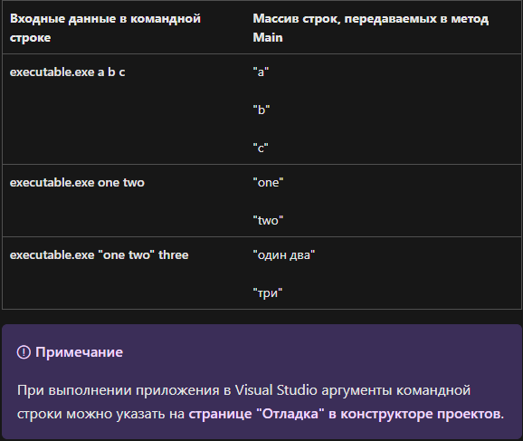
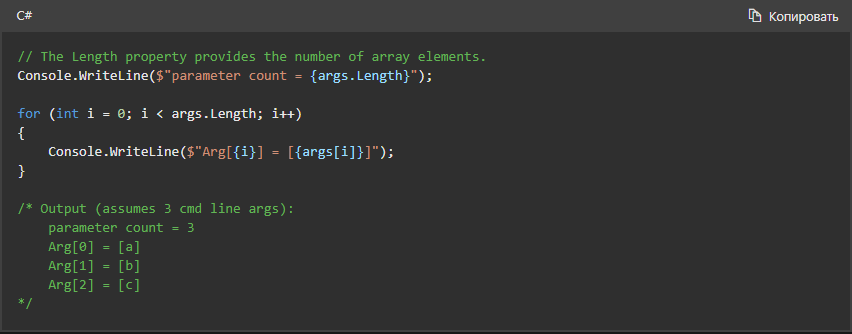
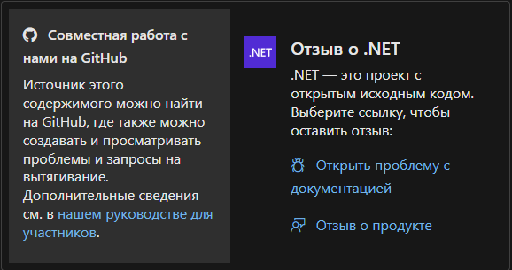
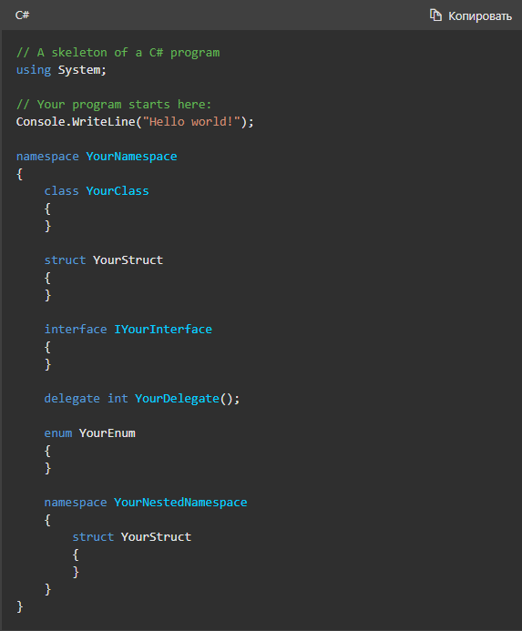
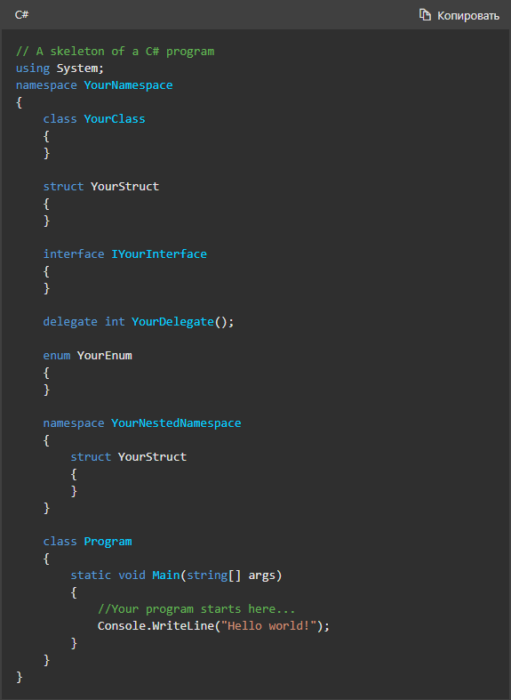

Практическое руководство. Отображение аргументов командной строки
- Статья 08.06.2023 Участники: 2
В этой статье
Аргументы, предоставляемые исполняемому файлу в командной строке, доступны через инструкции верхнего уровня или через необязательный параметр для метода Main. Аргументы предоставляются в форме массива строк. Каждый элемент массива содержит один аргумент. Пробелы между аргументами удаляются. Например, рассмотрим следующие вызовы из командной строки вымышленного исполняемого файла.
Пример
Этот пример отображает аргументы командной строки, передаваемые в приложение командной строки. Показанные выходные данные — первая запись в таблице выше.
См. также
Общая структура программы C#
Программа на языке C# состоит из одного или нескольких файлов. Каждый файл может содержать или не содержать пространства имен. Пространство имен может содержать типы, такие как классы, структуры, интерфейсы, перечисления и делегаты или другие пространства имен. Ниже приведен пример структуры программы на C#, содержащей все эти элементы.
В предыдущем примере для точки входа программы используются инструкции верхнего уровня. Эта функция была добавлена в C# 9. До версии C# 9 точка входа была статическим методом c именем Main, как показано в следующем примере:
 Вверх